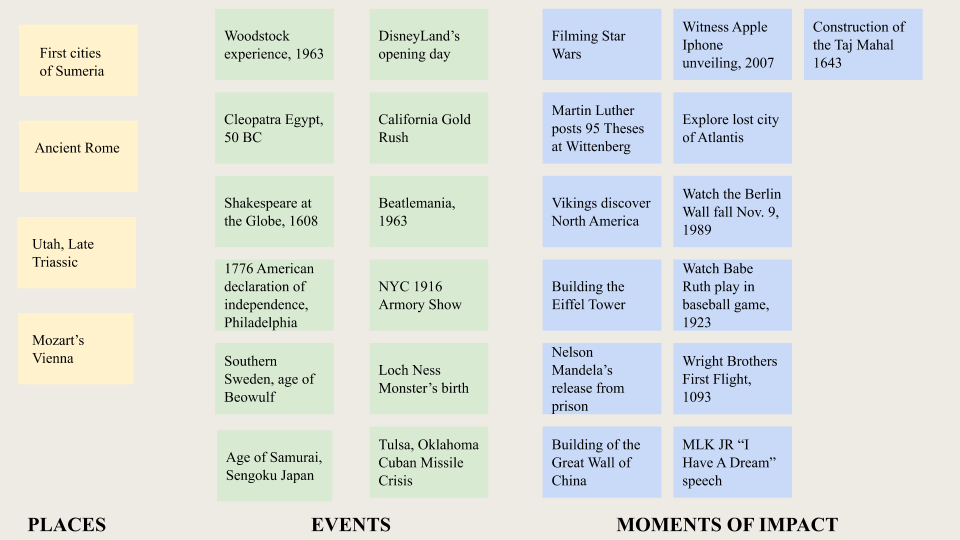
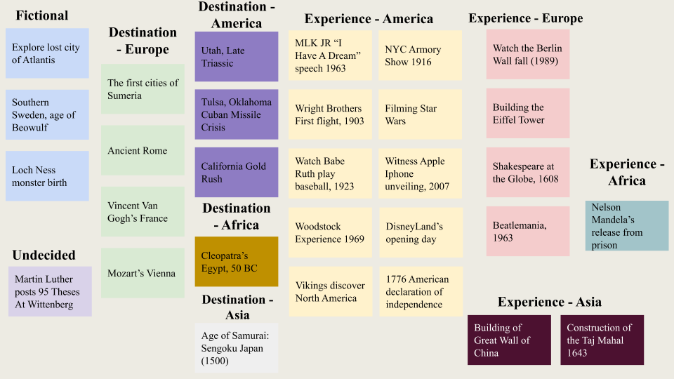
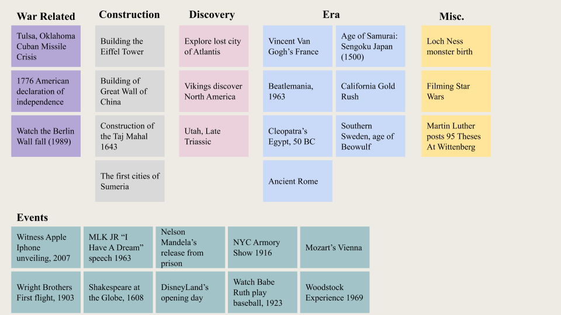
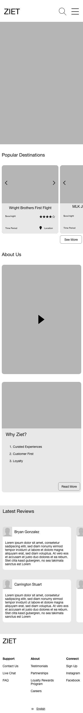
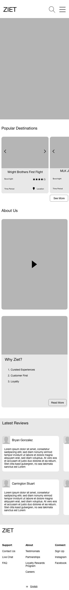

ZEIT CASE STUDY
Brief
Zeit is a subsidiary of Richard Branson’s Virgin empire. After a long struggle with Elon Musk, Virgin has been able to make time travel tourism available to all. Zeit is looking at you to create their new brand, and set up an ecommerce responsive website in which they can sell travel packages to approx. 289 destinations throughout time.
Goal
I was tasked with designing a responsive ecommerce website that is intuitive and allows customers to browse through different trip categories and details, filtering via interests and cohesive trip classifications.
Empathize
User Interviews
How do people discover new travel destinations? What attracts them to these destinations? I spoke with six frequent travelers and asked them to tell me about their travel experience, inclusive of their planning and booking process. I wanted to better understand how they used travel websites, as well as their needs, motivations, and frustrations around the entire travel experience.
Insights:
- 1. The majority of participants seem to want new experiences, but need imagery to help them along in their decision process.
- 2. It's very important to participants to feel trust during the booking and traveling process whether that is displayed through honest imagery, finding users the best prices, or keeping the promise of an engaging trip with no delays in transportation.
- 3. Traveling is a way for people to step back from their busy lives. This creates a strong desire for people to have a seamless booking and travel experience that curated to their specialized needs.
Competitor Analysis
In order to design a pl atform that allows users to easily book trips into the past, I needed to see their perspective to empathize with the problems associated with travel experiences. Though there is no exact competitor to this futuristic application, I found a strong need to check out indirect competitors within the travel space in order to examine collective painpoints within the market.
These secondary research methods allowed me to conclude the following:
- - Stong majority of travelers prefer booking a bundled travel experience over seperately booking their stay and experience.
- - Positive reviews build strong sense of trust amongst users.
- - Users prefer that the booking experience be limited to one site. When taken to another site to complete the booking process, there seems to be a lot of confusion that users want to avoid.
Define
User Persona
I created a user persona that speaks to the insights gained during user interviews that will serve as a reflection for the user I'm designing for. John is that user. He is a frquent traveler always searching for new perspectives, but needs new way to organize new travel plans and destinations.
With my ideal user defined, I thought it was important to clearly define and make destinctions between user, business, and technical needs in order to declare clear priorities before building out ZEIT's functionalities.

Ideate
Feature Road-Map
To begin the Ideate Phase, I brainstormed ideas for various product features and categorized them in four tiers from must-have to features that can come later on based on the goals outlined in the phase above.
User & Task Flows
Defining these goals allowed me to clearly prioritize features within the platform that would create an intuitive and effecient way for users to reach their end goal, to book a trip. With these goals defined, I began building out task and user flows to identify key screens needed and understand how users from different points of entry and overall backgrounds would navigate the platform.

Card Sorting
An integral part of designing ZEIT's user experience and interface was contingent on the way in which the 289 trips were organized within the site's taxonomy. In order to gain some insight into how that taxonomy should be organized, I conducted a card sorting exercise with a group of four participants. I gave them the task of sorting a sample size of twenty trips into groups that made the most sense to them.
  There was a few overlapping categories, which affirmed their validity of existing within the taxonomy framework. However, there were a handful of categories that did not match and even similar categories that had varying trips within them. I was able to conclude that an extensive search functionality was needed within the interface in order to give users controll to find trips effeciently that might be difficult to find under tradition taxonomy.
Sitemap
This card-sorting exercise helped inform Site Taxonomy decisions. I decided to create four main categories of trips; Popular Events, Historical Regions, Mythical Experiences, and Eras. I found that the 25 trips fit easily with these groups, in combination with highly-specific imagery, will allow users to find the trip they are looking to book. Though I thought it was important to include a extensive search experience for folks that want to bypass site breadcrumbs or know exactly what trip they want to book.

Design
Lo-Fi Wireframes
Low fidelity design elements were used to piece together a succinct web experience. Important elements that were revealed during the research phase helped inform design priorities, like users' preference for imagery-heavy interfaces and reliablity during their travel experience. This explains the reasoning for dividing the home page into imagery dense hero images, extensive search bar, popular destination cards, and informational about sections. I also wanted to show how these designs translated across multiple platforms.
.png) 

Interface Branding
The experience I want to curate within the ZEIT interface was contingent on defined user needs and conveying pillars of ZEIT's mission. A Sans-serif font was chosen to a the only font-styling because that converyed ZEIT modern and futuristic capabiilites as an innovative time travel company. Moreover, the simplistic and clean white and off-white interface helps to communicate modernism, while also allowing users the ability to focus on the sites imagery-heavy interface. Lastly,

High Fidelity Designs
This high-fidelity design of ZEIT desktop experience was brought to life by the important branding elements and wireframes conceived in the earlier part of the design process. Curating a design that is modern, trustwrothy, and imagery-heavy just like our potential users suggested.